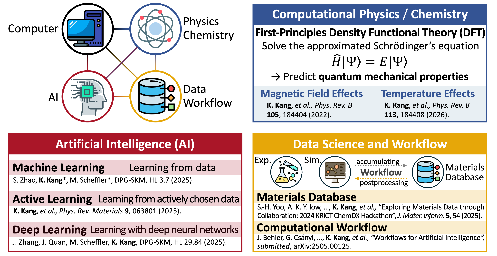
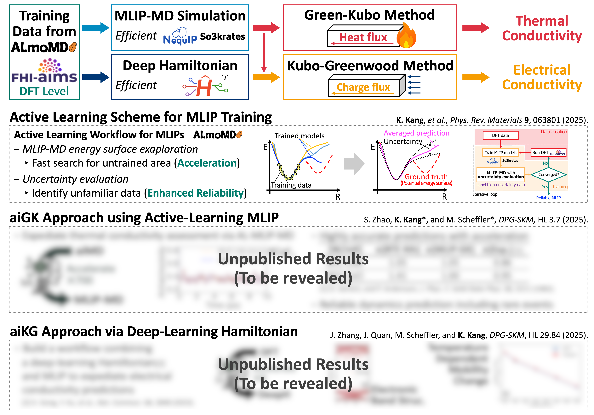
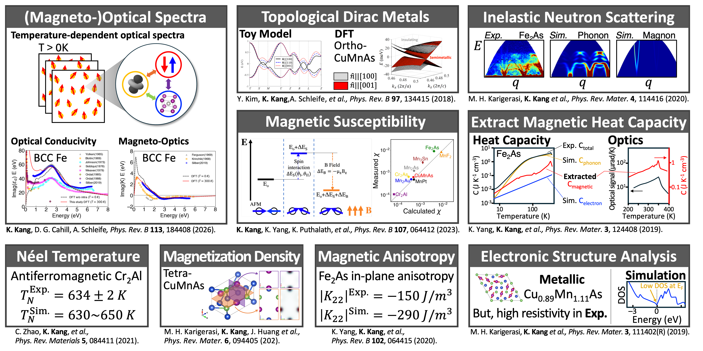
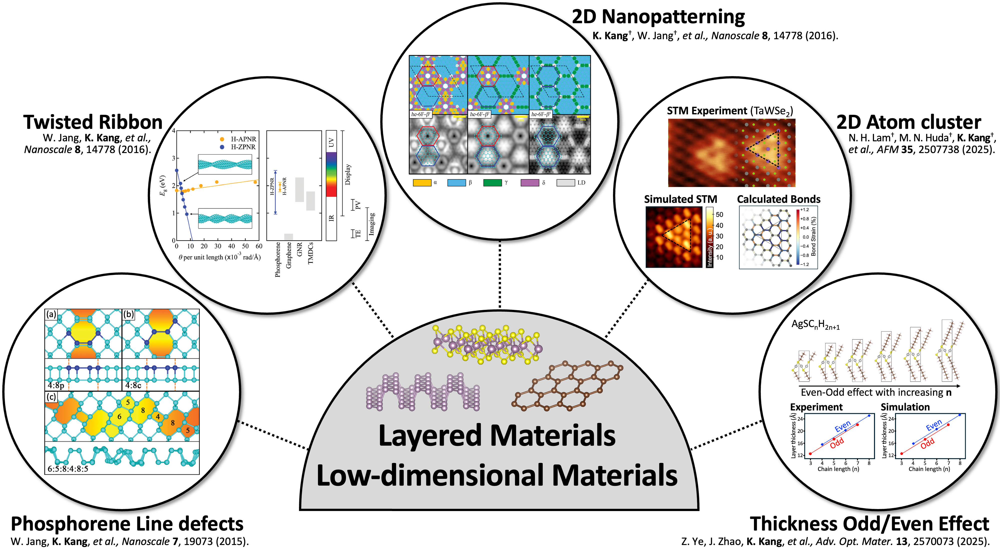

Methodology Development
MINT Lab develops novel first-principles methods(DFT, MD, SD) and adopts modern AI-Materials tools to predict interpret, and design materials properties under realistic environments with accelerated computation.
재료정보이론연구실은 새로운 제일원리 방법론(밀도범함수이론, 분자동역학, 스핀동역학)을 개발하고 최신 소재 인공지능 도구를 채택하여 보다 현실적인 환경에서 소재의 물성을 예측, 해석, 설계하는 데 있어 계산 및 탐색 속도를 가속화합니다.

Transport
MINT Lab studies heat, charge, and ion transport in advanced materials using electronic-structure calculations, phonon analysis, and AI-accelerated simulation workflows. Particularly, we utilize both perturbative and non-perturbative approaches to capture the complex transport mechanisms.
재료정보이론연구실은 전자구조 계산, 포논 분석, 및 소재 인공지능 기반 시뮬레이션 워크플로우를 사용하여 첨단 소재의 열, 전하, 이온 전도 현상을 연구합니다. 특히, 우리는 복잡한 전도 메커니즘을 포착하기 위해 편향적이고 비편향적 접근법을 모두 활용합니다.

Magnetism
MINT Lab investigates spin dynamics, exchange interactions, magnetic excitations, and magnetic responses to understand and engineer functional magnetic materials.
재료정보이론연구실은 스핀 역학, 교환 상호작용, 자성 흥분, 및 자성 반응을 조사하여 기능적 자성 소재를 이해하고 설계합니다.

Structural Diversity
MINT Lab explores how atomic-scale structural motifs, defects, interfaces, and compositional complexity of low-dimensional materials and layered materials shape electronic, phonon, and magnon properties.
재료정보이론연구실은 저차원물질과 층상 물질에서 원자 규모의 구조적 패턴, 결함, 경계면, 및 성분의 복잡성들이 전자, 포논, 마그논 물성에 어떻게 영향을 미치는지 탐색합니다.
